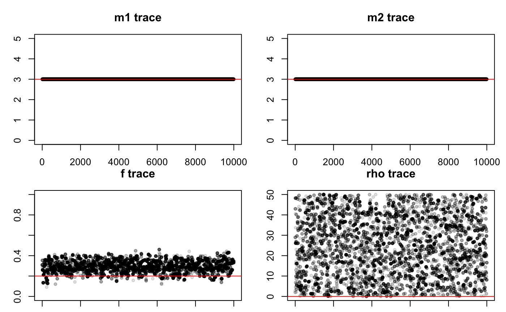
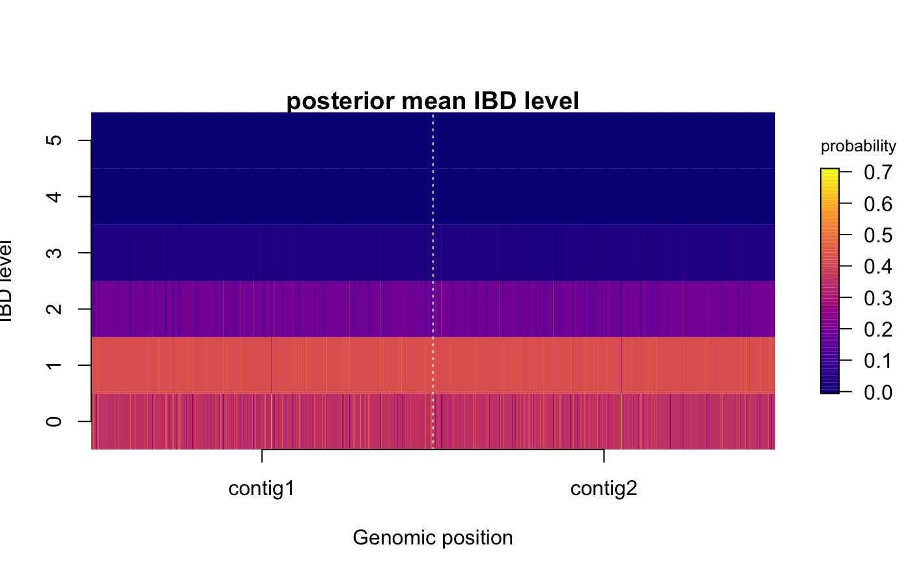

Getting Started with polyIBD
Nicholas F. Brazeau & Robert Verity
May 21, 2018
Source:vignettes/polyIBD.Rmd
polyIBD.RmdOverview
polyIBD is an R package that can be used to infer regions of identity by descent (IBD) from samples that are unphased and potentially polyclonal.
Recently, several programs have been written to address this problem, including Henden/Bahlo’s isorelate and Schaffner/Neafsey’s hmmIBD. Here we extend upon these approaches and assume that the multiplicity of infection (MOI) is unkown and is not limited to 2.
Using a bayesian approach, the main strength of polyIBD is that MOI estimates are unbounded and can be inferred directly along with other model parameters. As such, polyIBD has the ability to infer:
- Regions of IBD
- MOI estimates for both samples
- Genetic Relatedness
- Rate of Recombination
Description
polyIBD is a first-order Hidden Markov Model (HMM) that uses the Metropolis-Hasting Algorithm to infer model parameters. Within the HMM framework, polyIBD assumes that the transition probabilities and emission probabilites can be described and uses the forward-backward algorithm to calculate the likelihood of the hidden state. For an extended description of the model, please view the supplementary information.
Getting Started with polyIBD
First you will need to have successfully installed polyIBD as described previously in the README.
Input
The input for polyIBD is a filtered1 Variant Call File (VCF) that follows the VCF specifciations for the Genotype Filed and has a genotype (GT) value for each sample. In additon, VCFs must be unphased and called as a diploid. As such, acceptable GT values are: 0/0, 0/1, 1/1, and “.”, for homozygous referent, heterozygous, homozygous alternative, and missing, respectively. Currently polyIBD does not handle missing data, which is a limitation that will be resolved shortly.
Simulated Data
For the purpose of this vignette, we will simulate a VCF with two samples and use it to run polyIBD. First let’s input some specifications for the number of loci, the genetic relatedness, and the recombination rate for these samples.
# setup
n <- 1e3 # this is the number of loci we would like to simulate
rho_true <- 5e-3 # this is the recombination rate we are trying to infer
f_true <- 0.2 # this is the proportion of genetic relatedness we are trying to infer
m_true <- c(3,3) # this is the multiplicity of infection for sample1 and sample2, respectfully, that we are trying to infer
pos <- sort(sample(10*n, n)) # simulate some positions/genomic coordinatesWe will now call the built-in simulation function from polyIBD to take our inputs a simulate a two-sampled VCF. The simulation is using a beta distribution with the shape parameters alpha=1 and beta=1 to simiulate population allele frequencies. This distribution can be adjusted by the user but the 1,1 shape parameters provide a population with a high proportion of fixated alleles (to see the distribution, input the following command to your R Console: #> hist(rbeta(1000, 0.5, 0.5))).
set.seed(44)
# run the simulation
sim <- simData(pos=list(contig1=pos,contig2=pos),
m1=m_true[1], m2=m_true[2],
f=f_true, rho=rho_true, p=NULL, p_shape1=0.1, p_shape2=0.1)The ouptut of the simData function is a list of two lists and two dataframes:
1. Simulated population major allele frequencies for both samples (p) 2. The haploid genotypes (0 for referrent allele, 2 for alternate allele) for both samples (haploid) 3. The haploid genotypes (0 for referrent allele, 2 for alternate allele) for both samples (haploid) 4. 4. The IBD genotypes at each positions genotypes (0 for referrent allele, 2 for alternate allele) for both samples (haploid) ⋅⋅* This is a main assumption in the package…TBD …

Running the MCMC
# run MCMC
rho_max <- rho_true*100 # this is user-specified
ret <- runMCMC(vcf=sim$vcf, p=sim$p, rho_max=rho_max,
burnin=5e3, samples=1e4, reportIteration=NA) # turning off report iteration for space
#> Running MCMC
#> burnin phase
#> sampling phase
#> MCMC completed in 34.4422 seconds
#> convergence reached within defined burn-in period (Geweke p=0.45)From the MCMC, a polyIBD class object is returned that contians both summary statistics and raw data. The summary statistics and raw data can be interrogated directly. ### Summary Data Summary of the user-specified parameters for the MCMC burn-in and sampling iterations, acceptance rate (ideally should be around 23%), and the run-time of the function.
In addition, posterior estimates with median and 95% confidence intervals provided.
ret # is equivalent to summary(ret)
#> # MCMC summary
#> burn-in iterations: 5000
#> sampling iterations: 10000
#> acceptance rate: 0.2697
#> run-time (seconds): 34.442
#>
#> # Posterior estimates
#> 5% 50% 95%
#> m1 3.000000000 3.0000000 4.0000000
#> m2 3.000000000 3.0000000 3.0000000
#> f 0.167903760 0.2641291 0.3716628
#> rho 0.004621724 0.1681034 0.4653631Raw Data
All of the raw data used to generate the above summary statistics is available within the returned MCMC object.
summary(ret$raw) # is equivalent to summary(ret)
#> Length Class Mode
#> logLike_burnin 5000 mcmc numeric
#> logLike 10000 mcmc numeric
#> m1 10000 mcmc numeric
#> m2 10000 mcmc numeric
#> f 10000 mcmc numeric
#> rho 10000 mcmc numeric
#> runTime 1 -none- numericViewing the Results
Base R
# plot using base R
par(mfrow=c(2,2)) # for 4 plots
par(mar=c(1,3,3,1)) # you can adjust margins as you see fit
plot_m1(ret, ylim=c(0,5))
abline(h=m_true[1], col=2)
plot_m2(ret, ylim=c(0,5))
abline(h=m_true[2], col=2)
plot_f(ret)
abline(h=f_true, col=2)
plot_rho(ret)
abline(h=rho_true, col=2)
par(mfrow=c(1,1))
par(mar=c(2.5,1,1,2.5))
plot_IBD(ret)
Using ggplot Objects
# plot using ggplot from tidyverse
plotm1 <- polyIBD::ggplot_m1(ret)
plotm1 <- plotm1 + geom_hline(yintercept=m_true[1], colour="#cb181d")
plotm2 <- polyIBD::ggplot_m2(ret)
plotm2 <- plotm2 + geom_hline(yintercept=m_true[2], colour="#cb181d")
plotf <- polyIBD::ggplot_f(ret)
plotf <- plotf + geom_hline(yintercept=f_true, colour="#cb181d")
plotrho <- polyIBD::ggplot_rho(ret)
plotrho <- plotrho + geom_hline(yintercept=rho_true, colour="#cb181d")
## convert plots to gtable objects
grobm1 <- ggplot2::ggplotGrob(plotm1)
grobm2 <- ggplot2::ggplotGrob(plotm2)
grobf <- ggplot2::ggplotGrob(plotf)
grobrho <- ggplot2::ggplotGrob(plotrho)
gridExtra::grid.arrange(grobm1,
grobm2,
grobf,
grobrho,
ncol=2)
ggplot_IBD(ret)
#> Loading required package: viridis
#> Loading required package: viridisLite
#> Scale for 'fill' is already present. Adding another scale for 'fill',
#> which will replace the existing scale.Filtering will not be discussed here but resources include: GATK Forums, the vcfR tool, among others.↩